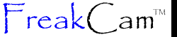
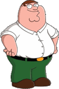
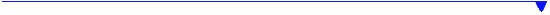

|  |  |
|  | |
|
As you can see, FreakCam receives continual attention as we listen to users' comments and suggestions to make it the best screen capture utility for Windows possible. You may download the latest version at FreakCam Download Page. 2024.11.20 10PM EST
2024.11.20 7:31 PM EST
2024.11.20
2024.11.20 10:PM EST
2024.11.19
2024.11.04 3:19 AM EST
uhhhhhhhhhhhhhhhhhhhhhh |
|